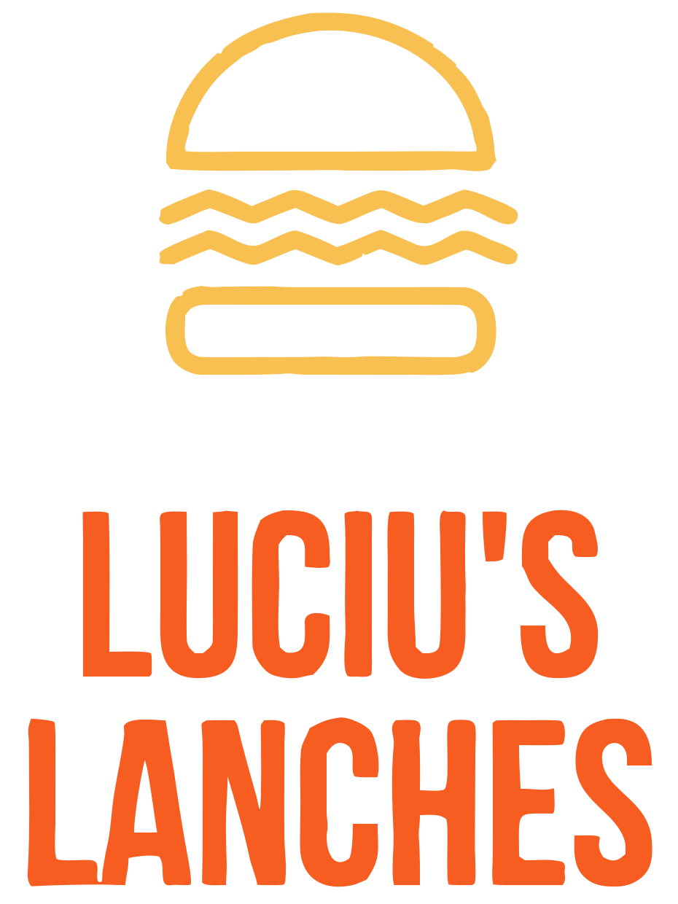

Proposta · 30 de setembro de 2026
O pedido sai da conversa e cai na cozinha.
Salão, entrega e retirada no mesmo sistema. A comanda imprime sozinha.
[ kompila ]×LUCIU'S LANCHESpara Jorge
Jorge, essa é a proposta do que a gente conversou pro Luciu's: o que a Kompila vai fazer, quanto custa e o que eu preciso de você pra começar.
[ kompila ]
Quem é a Kompila
A IA assume o trabalho repetitivo da sua empresa. Sua equipe vai pro que dá lucro.
Você não precisa entender de IA. A gente monta, coloca pra funcionar dentro do seu negócio e acompanha com você.
Antes da proposta, deixa eu te contar rapidinho quem é a Kompila. A gente coloca a IA pra fazer o trabalho repetitivo, e a sua equipe fica com o que dá dinheiro. Você não precisa entender de IA: a gente monta, coloca pra rodar e acompanha.
[ kompila ]
No que a gente é bom
Tudo pra vender e atender, feito sob medida.
Atendimento
A Liz no WhatsAppAtende na hora, segue o seu cardápio e as suas regras, e passa pra sua equipe o que é com gente.Sistemas
Sistema do jeito da sua rotinaPedido, comanda, mesa, cadastro, conferência. O que hoje é feito na mão vira sistema.Marca e site
Marca, site e lojaIdentidade, site e loja online feitos pra vender, não só pra ficar bonito.Divulgação
Instagram e anúnciosCalendário, posts e anúncios no Meta e no Google, com o resultado de volta.
É nisso que a gente é bom: atendimento com a Liz, sistema feito pra rotina do cliente, marca e site, e divulgação. No seu caso, a gente junta os dois primeiros: a Liz atendendo e o sistema de pedido.
[ kompila ]
Como isso melhora o Luciu's
Menos tempo no repetitivo. Mais pedido saindo certo.
Tarefa repetitiva
Ninguém anota pedido duas vezesA Liz anota, confere com o cardápio e confirma com o cliente. O pedido já entra no sistema.Fluxo de trabalho
Do pedido à cozinha, diretoConfirmou, a comanda sai na impressora com MESA, ENTREGA ou RETIRADA em cima.Entender os dados
O dia fica registradoPedidos, mesas e total do dia num lugar só, no celular ou no computador.Decidir melhor
Você vê o que vendeCom tudo registrado, dá pra ver o que sai mais e em que horário, sem planilha.
Pro Luciu's isso vira quatro coisas: ninguém anota o pedido duas vezes, o pedido vai direto pra cozinha, o dia fica registrado e você passa a ver o que vende e em que horário.
[ kompila ]
O que você me pediu
Três coisas. Uma cozinha só.
01
O robô anota o pedidoO cliente pede no WhatsApp e o pedido entra no sistema, sem ninguém digitar de novo.02
A comanda sai na impressoraDireto na impressora de nota da cozinha, escrito se é mesa ou entrega.03
O salão sob controleCada mesa com o que pediu e em que pé está, no mesmo lugar do delivery.
Antes de mostrar qualquer coisa, deixa eu confirmar se eu entendi direito. Você me pediu três coisas: o robô registrar o pedido, a comanda sair na impressora da cozinha e controlar as mesas do salão. Tudo no mesmo sistema. É isso? (Espera ele responder. Se tiver uma quarta coisa, anota.)
[ kompila ]
Como funciona
SALÃO
O garçom lança pelo celularOu o cliente lê o QR code da mesa e pede pelo WhatsApp, com o número da mesa já junto.→
DELIVERY
A Liz atende no WhatsAppAnota os itens, confere com o seu cardápio, pega nome e endereço e confirma com o cliente.Tudo cai no mesmo sistema e sai na cozinhaMESA 7 · ENTREGA
No salão, o garçom lança o pedido pelo celular. Se você quiser, dá pra ter um QR code em cada mesa: o cliente lê, abre o WhatsApp e já vai com o número da mesa. No delivery, quem atende é a Liz, a nossa IA. As duas portas caem no mesmo lugar e saem na mesma impressora.
[ kompila ]
Boa noite, quero 1 parmegiana e 1 refri 2 litros
Boa noite! Anotei: 1 parmegiana e 1 refrigerante 2 L. Qual o sabor do refri?
Guaraná
Fechado. Me passa o endereço de entrega?
Rua das Flores, 120, ap 32
Confirmado. Seu pedido já foi pra cozinha. Te aviso quando sair pra entrega.
Delivery
A Liz anota, confere e manda pra cozinha.
- 01
Só vende o que está no cardápioItem que não existe, ela avisa e oferece o que tem.
- 02
O preço sai do cardápio, não da IAA conta é feita pelo sistema. A IA nunca inventa valor.
- 03
Confirma antes de mandarSó vai pra cozinha depois do "confirmado".
Conversa de exemplo. Os itens serão os do seu cardápio.
Isso aqui é um exemplo, os itens vão ser os do seu cardápio. O ponto importante: a Liz só vende o que está cadastrado, e o preço quem calcula é o sistema, não a IA. Ela nunca inventa valor. E só manda pra cozinha depois que o cliente confirma.
[ kompila ]
01ocupada · 3 itens
02livre
03pediu a conta
04livre
05ocupada · 5 itens
06ocupada · 2 itens
07livre
08ocupada · 4 itens
livreocupadapediu a conta
Mapa de exemplo. O seu vai ter as suas mesas.
Salão
Você olha e sabe como está o salão.
- 01
Cada mesa com o que já pediuTocou na mesa, vê os itens e o total até agora.
- 02
Pediu mais? Nova comandaSó o que foi acrescentado sai na cozinha.
- 03
Fechou a conta, a mesa liberaE o dia fica registrado: mesas, pedidos, total.
Aqui é o salão. Cada quadrado é uma mesa: livre, ocupada ou pedindo a conta. Tocou na mesa, você vê o que ela já pediu e quanto está dando. Se pedir mais uma bebida, sai uma comanda só com a bebida. Fechou a conta, a mesa volta a ficar livre. Esse mapa é exemplo, o seu vai ter o desenho do seu salão.
[ kompila ]
A comanda na cozinha
A cozinha só precisa ler a primeira linha.
COZINHA · PEDIDO 0142 · 20:14
MESA 07
garçom: Ana
1x Parmegiana
2x Arroz branco
1x Suco de laranja
OBS: parmegiana sem cebola
salão
COZINHA · PEDIDO 0143 · 20:16
ENTREGA
Carla · Rua das Flores, 120 ap 32
1x Parmegiana
1x Refri 2 L guaraná
OBS: sem observação
pedido pelo WhatsApp · Liz
COZINHA · PEDIDO 0144 · 20:19
RETIRADA
Marcos · retira às 20:45
2x Parmegiana
1x Arroz branco
OBS: embalar pra viagem
pedido pelo WhatsApp · Liz
É isso que sai na impressora. Em cima, bem grande, o destino: MESA 07, ENTREGA ou RETIRADA. Na retirada vai o nome de quem busca e o horário que ele combinou com a Liz. Embaixo os itens e a observação. O cozinheiro não precisa perguntar nada pra ninguém. O modelo é exemplo; a gente ajusta o que aparece do jeito que a sua cozinha trabalha.
[ kompila ]
Impressão
Ninguém clica em imprimir.
01 · SISTEMA
O pedido é confirmadoPela Liz no WhatsApp ou pelo garçom no salão.→
02 · NO RESTAURANTE
Um programa no computador do caixaFica ligado, recebe o pedido na hora.→
03 · COZINHA
A impressora térmica solta a comandaA mesma impressora de nota que você já usa, se for térmica.
A impressão é automática. Fica um programinha rodando no computador do caixa, ligado na impressora. Confirmou o pedido, ele imprime. Uma pergunta pra você: qual é a marca e o modelo da sua impressora de nota? Se for térmica, que é a comum em restaurante, a gente usa ela mesmo.
Proposta técnica
De implementação
LUCIU'S LANCHESDATA DE EMISSÃO: 30/09/2026
Investimento pra implantar o sistema de pedidos com a Liz · Luciu's Lanches
| Item | Solução | O que inclui | Qtde | Investimento |
|---|
| 01 | Atendimento no WhatsApp | A Liz anota entrega e retirada, confere com o cardápio e confirma antes de mandar | 1 número | Incluso |
| 02 | Pedido do salão | Garçom lança pelo celular; QR code por mesa, se quiser | todas as mesas | Incluso |
| 03 | Comanda automática | Programa no computador do caixa ligado à impressora térmica da cozinha | 1 impressora | Incluso |
| 04 | Mapa de mesas | Livre, ocupada, pediu a conta; comanda nova só com o acréscimo | 1 salão | Incluso |
| 05 | Painel Kompila | Conversas, pedidos e o histórico do dia | 1 | Incluso |
| 06 | Implantação | Cadastro do cardápio, montagem e testes no restaurante | 1 | R$ 5.000,00 |
O sistema é composto por: a Liz no WhatsApp do restaurante, o pedido do salão, a comanda automática, o mapa de mesas e o painel da Kompila.
O resultado é o pedido saindo da conversa ou da mesa e caindo na cozinha, sem ninguém digitar de novo.
Mensalidade: R$ 578,00 por mês (sistema no ar, a Liz atendendo e o suporte da Kompila), com a primeira em 28/02/2027.
Condições de pagamento da implantação
Investimento total da implantaçãoR$ 5.000,00
Pix à vistaR$ 5.000,00
Cartão de crédito em até 6x6× R$ 833,33 + taxas
Mensalidade a partir de 28/02/2027R$ 578/mês
Aqui está o investimento item por item. Tudo isso entra na implantação de cinco mil, à vista no Pix ou em até seis vezes no cartão, com as taxas da operadora. A mensalidade de quinhentos e setenta e oito começa só em fevereiro.
Contratante
Aprovada esta proposta, a gente te manda o link de pagamento da implantação e o link pra preencher os dados do contrato.
Fica com o restaurante
- Impressora térmica da cozinha
- Computador do caixa ligado durante o expediente
- Custo das conversas do WhatsApp oficial (Meta), direto no cartão do restaurante
- Cardápio com preço, variações e adicionais
Observações
- A Liz só vende o que está no cardápio e o preço sai do sistema
- Nota fiscal (NFC-e) fica pra etapa 2, com orçamento à parte
- A NFC-e depende do certificado A1, do CSC da Fazenda e do seu contador
Suporte Kompila
- Sistema no ar e acompanhado pela Kompila
- Ajustes no cardápio e nas regras da Liz
- Atendimento pelo WhatsApp da Kompila
A IA faz o repetitivo.
Sua cozinha recebe o pedido certo.RESPONSÁVEL PELO PROJETOAlexsandro Reges · KompilaWhatsApp +55 11 96288-4399
O que fica com o restaurante, o que fica pra depois e o que a Kompila acompanha. Aprovou, eu te mando o link de pagamento e o dos dados do contrato.
[ kompila ]
Pra começar
O que eu preciso de você.
- 01
Cardápio com preçoItens, variações (tamanho, sabor) e adicionais.
- 02
Marca e modelo da impressoraE se ela liga por cabo de rede ou USB.
- 03
Quantas mesas e como o salão é divididoPra desenhar o seu mapa.
- 04
O WhatsApp do restaurante e o horárioO número onde a Liz vai atender e a área de entrega.
Pra começar eu preciso de quatro coisas: o cardápio com preço, o modelo da impressora, quantas mesas você tem e o WhatsApp do restaurante com o horário e a área de entrega. Com isso eu monto e te mostro funcionando.
[ kompila ]
Próximo passo
Você me manda o cardápio. Eu te mostro a comanda saindo.
- 01Você aprova esta proposta.
- 02Eu te mando o link de pagamento e o link dos dados do contrato.
- 03Com o cardápio e a impressora, eu te mostro um pedido saindo na comanda.
Aprovou, eu te mando o link de pagamento e o link pra preencher os dados do contrato. Você me manda o cardápio e o modelo da impressora, e eu te mostro um pedido saindo na comanda.